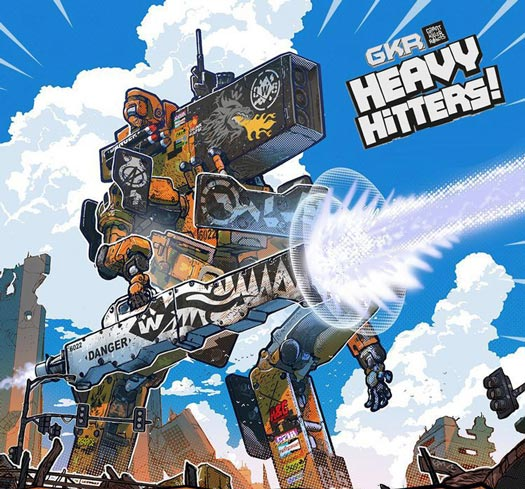
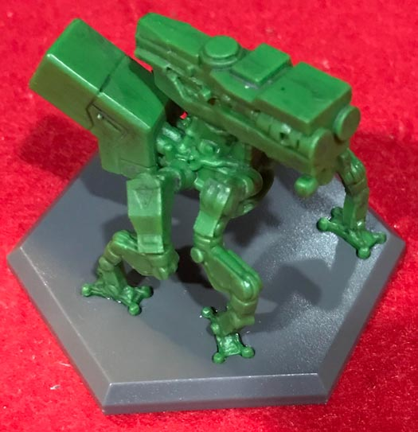
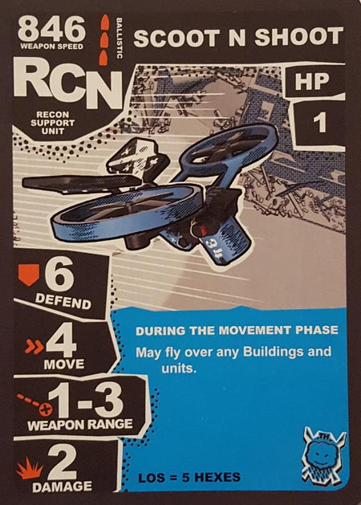
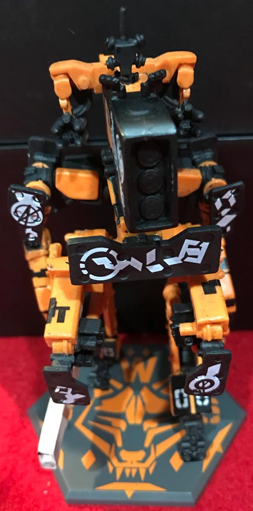
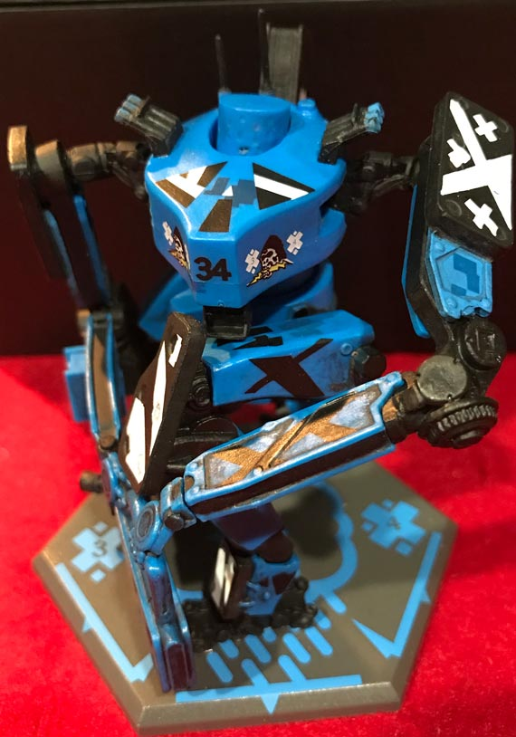
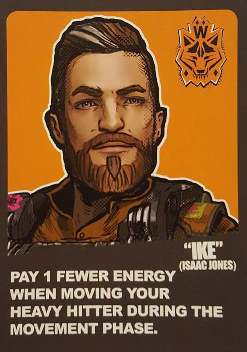
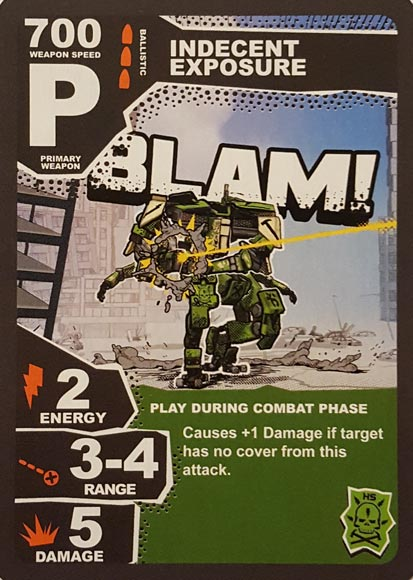
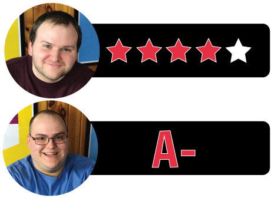

In this GKR: Heavy Hitters review, we break down the brand new, miniatures tabletop game from Cryptozoic Entertainment and Weta Workshop. Designed by Matt Hyra, Heavy Hitters has its players climbing into the cockpits of Giant Killer Robots as they battle for supremacy over a deserted city. The winner secures salvaging rights for their sponsor, so the stakes are high! For our thoughts on this epic game, read on below.

D reviews GKR: Heavy Hitters
 (Author’s
note: this review is meant to accompany our gameplay video and will not
go in-depth on the game’s rules. If you’re interested in learning how
the game is played, please watch the video. It’s not bad.)
(Author’s
note: this review is meant to accompany our gameplay video and will not
go in-depth on the game’s rules. If you’re interested in learning how
the game is played, please watch the video. It’s not bad.)
Giant Killer Robots: Heavy Hitters (henceforth referred to as GKR) is ridiculously huge. Honestly, when I first saw inside its box, I felt overwhelmed in a way that I rarely am by board games. I’ve played my share of big games over the years, but in terms of the sheer amount of stuff that comes with the box, perhaps only Twilight Imperium has it beat. Hell, even its name is oversized. This anxiety I felt was perhaps exacerbated by the fact that we are in possession of the Pilot Edition that comes with a second (huge) box filled with higher quality components for the game, as well as some completely new ones and some completely superfluous ones, like holographic pilot cards. Bigger isn’t always better, but it’s undeniable that an incredible, commendable amount of work went into the design and production of GKR. But I also definitely had some reservations going into this one.
And don’t misunderstand, I love sinking my teeth into a weighty game, but GKR is somewhat unlike any other game that I’ve personally played before. It’s a wargame, sure, but my experiences with wargames up to this point are games like Axis & Allies and A Game of Thrones, where you’re in control of small armies on a defined, zoomed-out map. GKR, meanwhile, seems to have a bit more in common with miniatures wargames like Warhammer, a series of which I, admittedly, have very little knowledge and absolutely no hands-on experience. It’s possible I’m way off-base with that assessment, but the scale and use of terrain were quite new to me. Fortunately, my fears were allayed as I read through the (mostly very good) rulebook and came to the realization that, while massive in scale, GKR is not impossibly complex. There are a lot of rules to learn, yes, but they are very coherently explained and almost all of them make logical sense. That said, I don’t think the rules are perfect, but they are reasonably easy to understand and remember, with perhaps one or two exceptions.
Gameplay proceeds pretty slowly for the most part, but only because there is a lot of strategy that needs to be considered, not because the game is confusing or overly difficult. It’s not the most satisfying strategy game I’ve ever played, as there is a somewhat limited amount of feinting and deception available, but overall, GKR is a fun game to play. Part of the fun comes from the game’s ability to tap into a more juvenile part of your brain. The Heavy Hitters don’t have any moving parts, but shifting them around the map and having them battle it out is definitely reminiscent of playing with action figures as a child, albeit at a much slower pace. The skyscrapers that provide cover help with this as well and provide a great sense of immersion. In terms of mechanics, the use of dice to resolve attacks, repairs, and damage taken will never be my favorite mechanic, but I think the game does a good job of creating excitement while making sure that luck doesn’t play too big of a part in the outcome. And the fact that each Heavy Hitter comes with unique weaponry goes a long way towards making combat varied and strategic.
I do have some mild issues with GKR, though. As I mentioned above, it’s difficult to deceive or surprise your opponents. The easiest way to do this is via use of the Sponsor Cards, which are gained through tagging buildings. Thematically, I understand their inclusion, but I don’t think they work well as-is. They’re too easy to earn, so it’s not very satisfying when you use them to sabotage your enemies. Instead, it just feels kind of cheap. Frankly, I’m not sure I would have included them at all, but at the very least I think they should be more difficult to acquire. And their usefulness varies wildly; it might have been better if there were a selection of face-up cards to draw from in addition to the face-down deck, to limit the amount of luck involved.
Also – and this is a more personal preference – I wish GKR allowed for a greater amount of mobility for the Heavy Hitters. There are only a couple of movement cards that can be included in your deck; most of them are focused on weaponry and deploying support units. Between this and the fact that each space of movement costs precious energy, the Heavy Hitters are all sort of forced to be lumbering tanks. You can keep your distance from your opponents if you want, but once you get closer and start initiating combat, it’s pretty much impossible to get out. I assume that this was a conscience design choice and the Heavy Hitters are supposed to be lacking in maneuverability, but I would love to have the option to pick-and-pop and really utilize the angles and cover more than you currently can.
Finally, although it should be obvious if you watched the video, GKR is awesome to look at. Unpacking it and cleaning it up might be a bit of a chore, but once the board is all set up and the minis are in position, this is one of the cooler looking tabletop games I’ve played. I actually don’t completely love the designs of the Heavy Hitters and their support units – they’re a bit chaotic and awkward for my tastes – but there is no doubting that they are striking and have a certain “cool” factor. The cel-shaded art found on the Pilot and Sponsor cards is also very well done and really helps establish the dystopian, cyberpunk-y world that the game is set in. Also, the cardboard buildings that come with the base game are pretty well-made and are plastered with a bunch of humorous signs, but the Pilot Edition also comes with plastic ones that you can decorate yourself with included stickers, for added durability and customization. Overall, the game provides quantity and quality in equal measure.
GKR is definitely not going to be for everyone. In addition to perhaps being prohibitively expensive, it is a longer game (about two hours) and is probably best served by being played often so that strategies and deck builds can be properly developed. Also, while rules for solo play exist, this is one that’s going to be best enjoyed when playing with a few friends. Still, if it’s within your budget and you find yourself compelled by what you saw in our video or read in our reviews, I would definitely recommend checking it out. It’s not perfect, but it’s a lot of fun.
D’s Rating: Four Stars out of Five
Will reviews GKR: Heavy Hitters
 Unlike
my compatriot D, I was neither surprised nor intimidated when I saw the
sheer quantity of components (and dense rulebook) included with Giant Killer Robots: Heavy Hitters (which I’ll also refer to as “GKR”).
After all, a full-size tabletop wargame is going to be big because it
has to be – there’s a lot going on. In fact, I would go as far as to say
that I was pleased by the size and weight of GKR before I ever
played it. I rarely anticipate games with such optimism anymore, and
I’m really glad to report that this game kicks serious butt. With
mind-blowingly well-made miniatures, superb artwork, and for the most
part, outstanding gameplay design, GKR strikes all the right notes and in some ways, sets a new bar for what tabletop wargaming should be.
Unlike
my compatriot D, I was neither surprised nor intimidated when I saw the
sheer quantity of components (and dense rulebook) included with Giant Killer Robots: Heavy Hitters (which I’ll also refer to as “GKR”).
After all, a full-size tabletop wargame is going to be big because it
has to be – there’s a lot going on. In fact, I would go as far as to say
that I was pleased by the size and weight of GKR before I ever
played it. I rarely anticipate games with such optimism anymore, and
I’m really glad to report that this game kicks serious butt. With
mind-blowingly well-made miniatures, superb artwork, and for the most
part, outstanding gameplay design, GKR strikes all the right notes and in some ways, sets a new bar for what tabletop wargaming should be.
Upon opening the special Kickstarter edition of GKR: Heavy Hitters, I quickly realized the ambition that was behind this game. The miniatures included, especially the giant robot ones, are insanely detailed and eye-catching. And this is pretty uniform across the board with this game – everything looks spectacular. Build quality is similarly impressive, with each and every mini being molded from a sturdy, high-quality plastic that should hold up through wear and tear. Some of the bonuses included with the Kickstarter edition take this game over the top, with the plastic tower pieces and holographic cards being especially notable. And then there’s the artwork, which is uniformly fetching, to say the least. I really adore the cel-shaded style the artists went for here – fans of the Borderlands video games will surely love it. If I were grading this game for build and aesthetics alone, I’d give it a resounding A+.
As we all know, tabletop games are more than just their art and components – gameplay matters most. Thankfully, GKR’s gameplay is pretty stellar, even if it suffers from a few flaws. Starting with the Deploy Phase, players place their supporting units on the board, adjacent to their Heavy Hitter. This phase is pretty straightforward, and I appreciate that certain cards make it more affordable to deploy, which normally costs four Energy – that’s a lot when you only have five to spend per round. After the Deploy Phase, there’s the Movement Phase, which is also rather straightforward. In a specific order, the Heavy Hitters and support drones move around the board into their pilots’ desired locations. Support robots move for free, but the Heavy Hitters require one Energy per hex. That may not sound like a lot, but again, you only get five Energy per round. Spend any more than that and you’ll tap into your negative Energy, which causes you to lose cards.
Very early on, I realized that managing my Energy would be a key strategy in GKR. In truth, it’s one of the game’s cleverest but most frustrating mechanics. The following phase, the Combat Phase, also possibly requires Energy expenditures, as both primary and secondary weapons require Energy to fire. It’s weird – it’s almost as if the Heavy Hitter robots are secondary in importance to the support drones, considering how costly it can be to do anything with the big guys. The game is called Giant Killer Robots after all, and yet, these “Giant Killers” seem awfully weak sometimes. Granted, proper management of your Energy will allow you to do some damage with them, but still, after the Movement Phase, you’ll most likely have only enough energy for a secondary attack. This is a real shame and one of GKR’s noticeable issues.
After combat, there’s the Tagging Phase, when you’ll “tag” any adjacent buildings with some colorful plastic pieces. Tag a building four times and it’s destroyed, and once you destroy four buildings, you instantly win the game. I should point out – tagging doesn’t cost any Energy and is a valid way to try to win. However, once your opponents start blasting you with lasers and missile strikes, you’ll realize that there’s little chance you’ll be victorious through tagging. Still, it was nice that they added in a secondary win condition, as it brings a little variety to the gameplay and thus, your strategy.
Once the Tagging Phase is complete, you enter the Reset Phase, replenish your hand, and start a new round. Before the reset, you draw Sponsor Cards for each building you tagged during the round (tags also smartly determine the first player). These Sponsor Cards throw curveballs into what’s otherwise pretty straightforward wargame gameplay. For instance, some of these cards allow you to “hack” an opponent’s system, preventing them from firing their weapons. There are also counter-hack cards that reverse the effects onto the player who first attempted to hack you. While these are only two examples, you probably understand how these Sponsor Cards work. For me, I’m split on these cards. On one hand, they add a bit of randomness and screw-someone-ever appeal to what could end up being an otherwise bland round. On the other hand, you spend a lot of time moving, strategizing, and coordinating attacks in this game, so having all that messed up by cards that seem too easy to collect is a bit annoying. I get that they’re meant to annoy, but I don’t know, I just don’t care for them that much. Perhaps if they were harder to earn, the game would’ve felt stronger.
All in all, GKR: Heavy Hitters is one hell of a tabletop wargame. It isn’t particulary difficult to learn, even if there are a bunch of mechanics to memorize. I would go as far as to say that this would be a decent introductory game for people who aren’t used to combat board games or wargames. Component-wise, I think GKR is in my top five ever, maybe even my top three. The art is also really terrific. Yes, the gameplay suffers from a few imbalances and the overpowered Sponsor Cards, but on the whole, it’s well above average. More importantly, GKR is a lot of fun, and what else really matters at the end of the day. As I said earlier, in many ways this game sets a new bar, especially given its reasonable weight. I thoroughly recommend checking it out if you’re into this kind of thing.
I give GKR: Heavy Hitters an: A-
GKR: Heavy Hitters Review – Board Crazy’s Ratings

Leave a Reply
You must be logged in to post a comment.